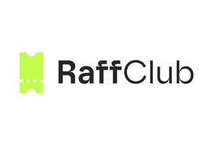
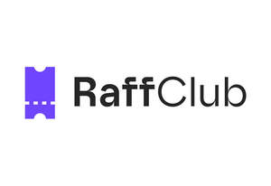

Trade Mark Journal No.2025/015 11 April 2025
UK00004177313 21 March 2025 (9,35,41,42,45)
Mark 1
Mark 2

Mark 3
Mark 4

- Class 9
- Computer software for operating, managing, and providing access to online marketplaces for raffles; downloadable mobile applications for facilitating raffles; downloadable software for participating in raffles; downloadable software for organising and managing online raffles and competitions; mobile applications for accessing and participating in online raffles.
- Class 35
- Providing an online marketplace for buyers and sellers of raffle tickets; advertising services for raffles through an online marketplace and mobile applications; arranging and conducting online raffles; operation of online marketplaces for raffles.
- Class 41
- Organising and conducting online raffles and competitions via a marketplace and mobile applications; entertainment services, namely, providing online games of chance by means of a mobile app; operating and conducting lotteries and other games of chance; gambling services.
- Class 42
- Providing online non-downloadable software for managing and operating an online marketplace for raffles; providing temporary use of online non-downloadable software for organising and conducting raffles and competitions; software as a service (SaaS) services featuring software for use in managing raffles; platform as a service (PaaS) featuring computer software platforms for facilitating raffles and competitions; provision of an online platform for connecting buyers and sellers for the purpose of raffles and competitions; providing online non-downloadable software for managing and participating in raffles and competitions; providing a website for organising and conducting raffles and competitions; providing a website featuring online social networking for the purpose of participating in and discussing raffles and competitions.
- Class 45
- Online social networking services in relation to participation in raffles and competitions.
Raffclub Limited
Representative: Harper James Ltd